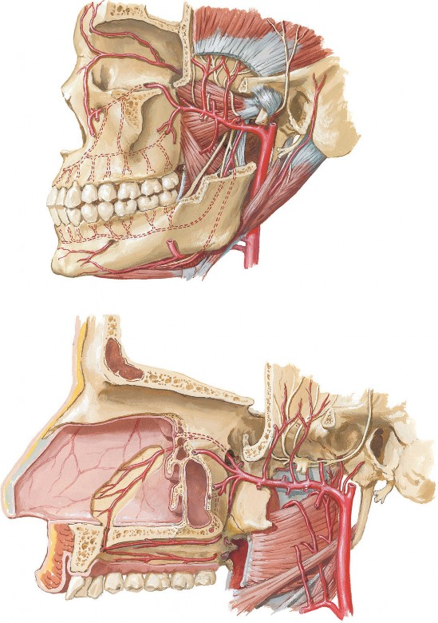

See also Plates 34, 72
Lateral pterygoid artery and muscle
Supra-orbital artery
Supratrochlear artery
Ophthalmic artery
Dorsal nasal artery
Angular artery
Infra-orbital artery
Anterior
Posterior
Deep temporal arteries and nerves
Masseteric artery and nerve
Middle meningeal artery
Auriculotemporal nerve
Maxillary artery
Superficial temporal artery
Posterior auricular artery
Superior
alveolar
arteries
Posterior
Middle
Anterior
Facial nerve
Inferior alveolar
artery and nerve
Buccal artery and nerve
Medial pterygoid
artery and muscle
Pterygomandibular raphe
Lingual nerve
Facial artery
Mental branch of
inferior alveolar artery
Submental artery
Sphenomandibular ligament
Mylohyoid nerve to mylohyoid artery
Digastric muscle (posterior belly)
Stylohyoid muscle
External carotid artery
Facial artery
Lingual artery
Mylohyoid artery and nerve
Sphenopalatine artery
Artery of pterygoid canal
Anterior
Posterior
Deep temporal
arteries and nerves
Posterior lateral nasal branch
Infra-orbital artery
Posterior superior
alveolar artery
Sphenopalatine artery
Posterior septal branches
Pharyngeal artery
Sphenopalatine foramen
Accessory meningeal artery
Middle meningeal artery
Anterior tympanic artery
Deep auricular artery
Auriculo-
temporal
nerve
Greater (descending)
palatine artery
Buccal artery
Anastomosis in
incisive canal
Left and right
greater palatine arteries
Left and right
lesser palatine arteries
Pterygoid arteries
Masseteric artery
Inferior alveolar artery
Superficial
temporal artery
Ascending pharyngeal
artery
Ascending palatine artery
Tonsillar branches
Tonsillar artery
External carotid artery
Facial artery
Superior pharyngeal constrictor muscle
Styloglossus muscle
Maxillary Artery
1